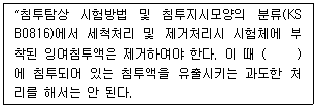
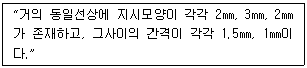
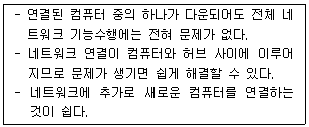

침투비파괴검사기능사 (2010-10-03 기출문제)
1과목: 침투탐상시험법(대략구분)
1. 형광침투탐상시험에 대한 설명 중 옳은 것은?
- 밝은 실내에서 적용한다.
- 현상제를 적용한 후 즉시 관찰한다.
- 어두운 곳에서 자외선 조사등을 켜고 관찰한다.
- 일반적인 검사체의 표면온도는 0~40℃에서 적용한다.
(정답률: 94%)

2. 전몰수침법을 이용하여 초음파탐상할 경우의 장점과 거리가 먼 것은?
- 주사속도가 빠르다.
- 결함의 표면 분해능이 좋다.
- 탐촉자 각도의 변형이 용이하다.
- 부품의 크기에 관계없이 검사가 가능하다.
(정답률: 50%)
3. 용제제거성 염색침투탐상시험이 다른 침투탐상시험과 비교하였을 때의 장점으로 옳은 것은?
- 암실에서 탐상하기에 가장 적합하다.
- 경제적이고 미세 결함 탐상에 적합하다.
- 세척이 편리하고 탐상감도가 제일 높다.
- 휴대성이 좋고 대형 부품의 부분탐상에 적합하다.
(정답률: 53%)
4. 진공보다 적은 투자율을 가지는 물질을 나타내는 용어는?
- 반자성(diamagnetic)성
- 상자성(paramagnetic)성
- 강자성(ferromagnetic)성
- 페리자성(ferrimagnetic)성
(정답률: 50%)
5. 비파괴검사법 중 일반적으로 검사비가 가장 많이 드는 것은?
- 초음파탐상시험
- 침투탐상시험
- 방사선투과시험
- 자분탐상시험
(정답률: 78%)
6. 인간의 가청주파수 최대 한계는 얼마 정도인가?
- 2㎑
- 20㎑
- 200㎑
- 2000㎑
(정답률: 54%)
7. 음파가 한 매질에서 다른 매질로 진행할 때, 경계면에서 반사에 영향을 미치는 가장 중요한 인자는?
- 초음파의 속도
- 초음파의 주파수
- 진동자의 압전효과
- 두 매질의 음향임피던스
(정답률: 45%)
8. 제품이나 부품의 동적결함 발생에 대한 전체적인 모니터링(monitoring)에 적합한 비파괴검사법은?
- 육안시험
- 적외선 검사
- X선투과시험
- 음향방출시험
(정답률: 39%)
9. 비파괴검사법 중 비자성 재료의 표면 피로균열 검사에 가장 적합한 검사법은?
- 방사선투과검사
- 초음파탐상검사
- 자분탐상검사
- 침투탐상검사
(정답률: 57%)
10. 비파괴검사를 했을 때 알수 있는 것과 거리가 먼것은?
- 품질평가
- 수명평가
- 누설탐지
- 인장강도
(정답률: 48%)
11. 비파괴검사법 중 체적검사에 적합한 것은?
- 육안검사
- 침투탐상검사
- 자분탐상검사
- 방사선투과검사
(정답률: 47%)
12. 상온에서 자분탐상시험으로 검사체의 결함검출이 어려운 것은?
- 철(Fe)
- 니켈(Ni)
- 코발트(Co)
- 비스무스(Bi)
(정답률: 61%)
13. 헬륨질량분석, 압력변화시험 등과 같은 종류의 비파괴검사법에 속하는 것은?
- 육안검사
- 누설검사
- 음향방출검사
- 침투탐상검사
(정답률: 80%)
14. 와전류탐상시험에서 검사 코일의 임피던스 변화에미치는 영향이 제일 작은 인자는?
- 시험속도
- 시험주파수
- 시험체의 전도율
- 시험체의 투자율
(정답률: 41%)
15. 기온이 급강하하여 에어졸형 탐상제의 압력이 낮아져서 분무가 곤란할 때 검사자의 조치방법으로 가장 적합한 것은?
- 새로운 것과 언 것을 교대로 사용한다.
- 온수 속에 탐상 캔을 넣어 서서히 온도를 상승시킨다.
- 에어졸형 탐상제를 난로 위에 놓고 온도를 상승시킨다.
- 일단 언 상태에서는 온도를 상승시켜도 제 기능을 발휘하지 못하므로 폐기한다.
(정답률: 85%)
16. 침투탐상시험에서 시험조건에 따른 현상제의 선택이 가장 올바르게 설명된 것은?
- 매우 거친 표면은 습식현상제가 적합하다.
- 소형의 대량작업에는 건식현상제가 적합하다.
- 매우 매끄러운 표면은 건식현상제가 적합하다.
- 미세한 균열 검출에는 속건식 현상제가 적합하다.
(정답률: 33%)
17. 침투탐상시험으로 검사 가장 어려운 시험체는?
- 주철
- 담금질한 알루미늄
- 유리로 만들어진 부품
- 다공성 물질로 된 부품
(정답률: 87%)
18. 침투탐상시험시 무관련지시가 생기는 가장 큰 이유는?
- 결함이 많기 때문에
- 부적당한 열처리 때문에
- 침투시간이 충분하였을 때
- 잉여침투제의 불충분한 제거 때문에
(정답률: 83%)
19. 침투탐상 시험장치 중 배액대의 주된 역할은?
- 침투액을 여과하는 역할
- 전처리시 오염물을 제거하는 역할
- 현상액이 충분히 적용되도록 하는 역할
- 시험체 표면에 있는 잉여 침투액을 제거하는 역할
(정답률: 47%)
20. 후유화성 침투탐상시험에서의 유화시간으로 옳은 것은?
- 침투시간과 같다.
- 현상시간과 같다.
- 침투시간의 반이다.
- 잉여 침투제를 제거할 수 있는 최소한의 시간이다.
(정답률: 66%)
2과목: 침투탐상관련규격(대략구분)
21. 수세성 침투탐상시험시 침투액을 세척하는 가장 일반적인 방법은?
- 물에담근다.
- 젖은 걸레로 닦는다.
- 세척수를 분무노즐로 분사하여 닦는다.
- 수돗물에 담구어 걸레를 이용하여 닦는다.
(정답률: 60%)
22. 침투탐상시험의 후처리 장치로 옳은 것은?
- 시험체에 남아있는 현상제를 제거하는 수세 탱크
- 시험체에 남아있는 유화액을 제거하는 알칼리 탱크
- 시험체에 남아있는 현상제를 제거하는 빙초산 탱크
- 시험체에 남아있는 유화액을 제거하는 샌드브러쉬 탱크
(정답률: 62%)
23. 액체가 작은 틈으로 스며 들어가는 것은 모세관 현상에 의한 것으로서 이는 어느 것과 가장 관련이 깊은가?
- 화학평형
- 전자기력
- 분자응집력
- 중력가속도
(정답률: 69%)
24. 수세성 침투탐상시험이 후유화성 침투탐상시험과 특별히 다른 점은?
- 유화제를 첨가할 필요가 없다.
- 알루미늄표면 균열 탐상에만 사용된다.
- 현상하기 위하여 표면에 있는 과잉 침투제를 제거할 필요가 없다.
- 표면직하(subsur face)에 있는 미세결함 탐상에 후 유화성 침투탐상제보다 우수하다.
(정답률: 55%)
25. 침투탐상시험시 의사지시가 생기는 원인이 아닌 것은?
- 부적절한 세척을 햇을때
- 현상제에 침투액이 묻었을때
- 방사선투과시험을 먼저 했을 때
- 외부 물질에 의하여 오염되었을 때
(정답률: 77%)
26. 침투탐상 시험방법 및 침투지시모양의 분류(KS B0816)의 탐상시험에 대한 설명 중 틀린 것은?
- 대비시험편 A형과 B형 대비시험편이 있다.
- 형광침투액 사용시 암실의 밝기는 20룩스 이하이어야 한다.
- 습식현상장치는 교반 등에 따라 현상제를 분산시킬수 있어야 한다.
- 건식 현상장치는 현상제가 외부로 비산되어 시험하는 곳을 비산할 수 있는 구조이어야 한다.
(정답률: 65%)
27. 침투탐상 시험방법 및 침투지시모양의 분류(KS B0816)에 따라 현상제 적용 후 침투지시모양의 관찰은 언제 하도록 권고하고 있는가?
- 현상제 적용 후 즉시
- 현상제 적용후 3~5분 사이
- 현상제 적용 후 7~60분 사이
- 현상제 적용 후 100~120분 사이
(정답률: 70%)
28. 침투탐상 시험방법 및 침투지시모양의 분류(KS B0816)에 규정된 자외선 조사장치의 파장 범위로 옳은 것은?
- 250㎚ ~ 300㎚
- 320㎚ ~ 400㎚
- 450㎚ ~ 560㎚
- 550㎚ ~ 780㎚
(정답률: 70%)
29. 항공우주용 기기의 침투탐상 검사방법(KS W 0914)에 따라 에칭한 표면이 피복되어 있는 경우에 최종 침투탐상검사를 실시하여도 되는 것은?
- 도금
- 도료
- 화성피막
- 양극처리
(정답률: 33%)
30. 침투탐상 시험방법 및 침투지시모양의 분류(KS B0816)에 따른 전수검사에 의한 합격품은 어떠한 색깔로 착색 표시하는가?
- 적갈색
- 황색
- 적색
- 청색
(정답률: 50%)
31. 침투탐상 시험방법 및 침투지시모양의 분류(KS B0816)에 의한 시험방법 중 유화처리에 앞서 예비 세척처리가 필요없는 검사법은?
- 후유화성 형광침투액(물베이스 유화제) - 무현상법
- 후유화성 염색침투액(물베이스 유화제) - 속건식현상법
- 후유화성 형광침투액(물베이스 유화제) - 습식현상법(수현탁성)
- 후유화성 염색침투액(기름베이스 유화제) - 습식현상법(수현탁성)
(정답률: 30%)
32. 배관 용접부의 비파괴시험 방법(KS B 0888)에서 침투탐상시험의 기록사항 중 “시험결과” 에 기록하여야 할 사항이 아닌 것은?
- 침투시간
- 침투지시모양의 위치
- 침투지시모양의 평가점
- 침투지시모양의 분류와 길이
(정답률: 35%)
33. 항공우주용 기기의 침투탐상 검사방법(KS W 0914)에 따른 염색침투탐상검사에서 조명 장치의 조도로 옳은 것은?
- 15인치 거리에서 100[lm.ft ] 이상
- 15인치 거리에서 1000[lm.ft ] 이상
- 시험체 표면에서 100[lm.ft ] 이상
- 시험체 표면에서 1000[lm.ft ] 이상
(정답률: 24%)
34. 다음 중 ( )안에 들어 갈 적절한 용어는?

- 흠 속
- 세척제
- 유화제
- 흠 주변
(정답률: 70%)
35. 침투탐상 시험방법 및 침투지시모양의(KS B 0816)에 따라 강용접부를 탐상할 때 시험체와 침투제의 표준온도 범위로 옳은 것은?
- 4~25℃
- 15~50℃
- 20~60℃
- 25~70℃
(정답률: 73%)
36. 침투탐상 시험방법 및 침투지시모양의 분류(KS B0816)에 따라 사용하는 침투액의 분류와 잉여 침투액의 제거 방법에 따른 분류의 명칭 기로 조합이 “FB"일 때 이는 무엇을 의미하는가?
- 수세성 염색침투액
- 수세성 형광침투액
- 용제제거성 염색침투액
- 기름베이스 후유화성 형광침투액
(정답률: 69%)
37. 침투탐상 시험방법 및 침투지시모양의 분류(KS B0816)에서 시험체와 침투액의 온도가 규정 내의 온도일때 강용접부의 표준 침투시간으로 옳은 것은?
- 5분
- 15분
- 30분
- 2시간
(정답률: 79%)
38. 침투탐상 시험방법 및 침투지시모양의 분류(KS B0816)에 따라 다음과 같은 경우 침투지시모양의 길이로 옳은 것은?

- 1개의 연속된 지시모양으로 지시길이는 7㎜ 이다.
- 1개의 연속된 지시모양으로 지시길이는 9.5㎜ 이다.
- 2개의 지시모양으로 지시길이는 각각 2㎜, 6㎜ 이다.
- 2개의 지시모양으로 지시길이가 각각 6.5㎜, 6㎜이다.
(정답률: 61%)
39. 항공 우주용 기기의 침투타상 검사방법(KS W 0914)의 침투액계 타입 Ⅰ의 공정에 대한 설명 중 틀린 것은?
- 영구 착색렌즈를 사용해서는 안된다.
- 검사하기 전 적어도 1분 동안 암실에 적응해야 한다.
- 자외선의 강도는 구성부품 표면에서 최소 800㎼/cm2이상이여야 한다.
- 배경이 과잉으로 형광을 발하는 구성 부품은 청정화하여 재처리하여야 한다.
(정답률: 34%)
40. 침투탐상 시험방법 및 침투지시모양의 분류(KS B0816)에 따른 결함지시의 평가에 대한 설명으로 옳은 것은?
- 지시모양이 네모 모양은 선상 침투지시이다.
- 지시모양이 가는 세선일 때 원형상 침투지시이다.
- 갈라짐 이외의 결함으로 그 길이가 나비의 3배 이상일 때는 선상 침투지시모양이다.
- 갈라짐 이외의 결함으로 그 길이가 나비의 3배 미만일 때는 선상 침투지시모양이다.
(정답률: 70%)
3과목: 금속재료일반 및 용접일반(대략구분)
41. 정부기관의 서브도메인에 해당되는 것은?
- re
- com
- co
- go
(정답률: 24%)
42. 다음과 같은 장점을 가진 네트워크 토폴리지는?

- 버스형
- 트리형
- 링형
- 스타형
(정답률: 16%)
43. 대화나 집단 토론이 가능하며 문서파일, 그래픽 파일, 음성파일을 인터넷을 이용해 전달하는 것은?
- 메신저
- FTP
- 이메일
- 웹 하드
(정답률: 56%)
44. 외부인이 자신의 공개되지 않은 자원에 접근하는 것을 막고 네트워크 내의 자원을 보호해 주는 것은?
- Gateway
- Firewall
- DNS
- Network Adapter
(정답률: 29%)
45. 인터넷 응용 서비스에 대한 설명으로 옳은 것은?
- Usenet : 특정 데이터베이스 등을 키워드로 고속검색 할 수 있으며, 색인화 된 자료를 찾는데 유용한 서비스이다.
- Gopher : 동일한 관심사를 가진 사함들 간의 토론의 장으로 일종의 전자게시판에 해당한다.
- Archie : 인터넷은 수천 개의 사이트에서 수백만개의 파일을 제공하고 있다. 이런 파일이나 정보를 찾기 위해 개발된 것이 아키(Archie) 서비스이다.
- WAIS : TUI 형식으로 간단한 메뉴 방식으로 보다 쉽게 사용자가 원하는 정보나 검색 정보를 제공받을 수 있는 서비스 이다.
(정답률: 33%)
46. 탄소강의 청열메짐은 약 몇 ℃ 정도에서 일어나는가?
- 500~600℃
- 200~300℃
- 50~150℃
- 20℃이하
(정답률: 52%)
47. 금속의 일반적인 특징을 설명한 것 중 옳은 것은?
- 전기 및 열의 부도체이다.
- 전성은 좋으나 연성이 나쁘다.
- 금속은 모두 은백색의 광택이 있다.
- 수은을 제외한 금속은 고체상태에서 결정구조를 가지고 있다.
(정답률: 55%)
48. 시험편에 압입 자국을 남기지 않거나 시험편이 큰 경우 재료를 파괴시키지 않고 경도를 측정하는 경도기는?
- 쇼어 경도기
- 로크웰 경도기
- 브리넬 경도기
- 브커즈 경도기
(정답률: 54%)
49. 다음 중 형상 기억 합금에 관한 설명으로 틀린 것은?
- 열탄성형 마테자이트가 형상 기억 효과를 일으킨다.
- 형상 기억 효과를 나타내는 합금은 반드시 마텐자이트 변태를 한다.
- 마텐자이트 변태를 하는 합금은 모두 형상 기억 효과를 나타낸다.
- 원하는 형태로 변형 시킨 후에 원래 모상의 온도로 가열 하면 원래의 형태로 되돌아간다.
(정답률: 49%)
50. 다음 중 탄소강의 표준 조직이 아닌 것은?
- 오스테나이트
- 시멘타이트
- 펄라이트
- 마텐자이트
(정답률: 48%)
51. 특수한 방법으로 제조한 알루미나가루와 알루미늄가루를 압축성형하고, 약 550℃에서 소결한 후 열간압출하여 사용하는 재료로 일명 SAP라 불리우는 것은?
- 내열용 Al 의 총칭
- Al 분말의 소결품
- Al 제품 중 초경질 합금
- 피스톤용 합금 계열의 총칭
(정답률: 35%)
52. 다음 중 금속의 격자결함이 아닌 것은?
- 가로결함
- 면결함
- 점결함
- 공공
(정답률: 26%)
53. Fe-C상태도에서 0.8%C 함유하며, 723℃에서 ↔ +Fe C 로 반응하는 것을 무엇이라 하는가?
- 공정반응
- 공석반응
- 편정반응
- 포정반응
(정답률: 46%)
54. 초강 두랄루민(ESD)계의 주성분으로 옳은 것은?
- Al-Cu계 합금
- Al-Si계 합금
- Al-Cu-Si 계 합금
- Al-Mg-Zn 계 합금
(정답률: 46%)
55. 공석조정을 0.80C라고 하면, 0.2%C 강의 상온에서의 초석페라이트와 펄라이트의 비는 약 몇 %인가?
- 초석페라이트 75% : 펄라이트 25%
- 초석페라이트 25% : 펄라이트 75%
- 초석페라이트 80% : 펄라이트 20%
- 초석페라이트 20% : 펄라이트 80%
(정답률: 38%)
56. 일정 온도에서 갑자기 전기저항이 0(Zero) 이 되는 현상은?
- 초전도
- 비정질
- 클래드
- 부도체
(정답률: 46%)
57. 네이벌 황동(Naval Brass)이란?
- 6 : 4 황동에 Sn을 약 0.75 ~ 1% 정도 넣은 것
- 7 : 3 황동에 Mn을 약 2.85 ~ 3% 정도 넣은 것
- 3 : 7 황동에 Pb을 약 3.55 ~ 4% 정도 넣은 것
- 4 : 6 황동에 Fe을 약 4.95 ~ 5% 정도 넣은 것
(정답률: 45%)
58. 강재표면의 흠이나 개재물, 탈탄층 등을 제거하기 위하여 될 수 있는 대로 얇게 그리고 타원형 모양으로 표면을 깎아내는 가공법은?
- 아크에어 가우징
- 용사법
- 피닝
- 스카핑
(정답률: 48%)
59. 산소 - 아스틸렌가스용접을 할 때 사용하는 연강용가스 용접봉의 재질에 첨가된 화학성분에 대하여 설명한 것 중 틀린 것은?
- 탄소(C) : 강의 강도는 증가하나 연신율과 굽힙성은 감소한다.
- 규소(Si) : 강도는 증가하나, 기공이 발생한다.
- 인(P) : 강에 취성을 주며, 가연성을 잃게 한다.
- 유황(S) : 용접부의 저항력을 감소시킨다.
(정답률: 23%)
60. 아크전류 150A, 아크전압 25V, 용접속도 15㎝/mindls 경우 용접단위 길이 1㎝당 발생하는 용접입열은 약 몇 joule/㎝ 인가?
- 15000
- 20000
- 25000
- 30000
(정답률: 22%)